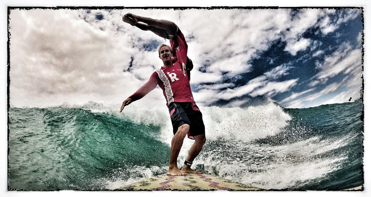
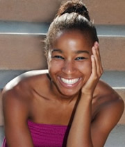
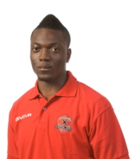

Chuck Inman & Lauren Oiye
|
|
|
Chuck Inman |
Lauren Oiye |
Chuck was introduced to the sport of Tandem Surfing by a client who was, already envolved in the sport. At first Chuck was not interested in the Tandem Sport. With persistancy he caught a wave and lifting his first partner into a "swan".
Chuck began competing in 2006 and competes in several events within the surfing world. His passion for the sport of surfing and his desire to be on and near the ocean drives him to continue his journey to become a true Waterman.
Chuck currently holds two ISA World Titles in Tandem Surfing for 2008 and 2011 with partner Tiffany. He is excited to have a new partner for the 2012 season, Lauren Oiye!
|
Lauren competed in her first National Championship at the age of 8, competed in the USA Sports Acrobatics in 1995-2000, and brought her love of acrobatics into the water in 2000 and began Synchronized Swimming.
By age 17, she was a member of the USA Junior National Team and trained at the Olympic training centers. Through 2004-2008 she was continually appointed to the USA team. Other accomplishments with synchronized swimming include:
- 2004 USA Junior Nationals-Team 1st
- 2005 USA Junior Nationals-2nd in Team event, 7th in duet event, 9thin Solo event
- 2005 Rome Open-3rd in Team event, 3rd in Combination Team
- 2005 US open- 2nd in Team event, 3rd in Combination Team event
- 2005 Appointed to the All American Team
- 2006 US National Champion – 1st in Team event
- 2006 USA Senior National Team member
- 2006 Rome Open- 2nd in Team event
- 2006 US Open- 2nd in team event, 1st in Combination team event
- 2007 US Nationals- 3rd in Team event, 9th in Solo event
- 2007 USA National Team member- Competed in the Swiss open
- 2007 Olympic Trials 11th place – took 9 Athletes for the Olympic team
- More information
|
|
|
Detroit Derby Girls' All Star Team |
The Detroit Derby Girls are a skater owned and operated women's flat track roller derby league. Competing nationally since 2006, DDG's All Stars recently placed fifth in the 2012 WFTDA North Central Regional Playoffs. The All Stars are supported by a B and C team, the Motor City Disassembly Line, who are 3-1 for the interleague season, and the Motown Wreckers, who are 2-1 for the season. All of their interleague skaters are gleaned from their five home teams, The Detroit Pistoffs, Grand Prix Madonnas, D-Funk, Pistolwhippers and the Devil's Night Dames.
The DDG skaters have been individually recognized for their excellence as athletes, with All Star Racer McChaseHer being selected for the Roller Derby World Cup's Team USA and All Star Tinja being selected as the Detroit Metrotimes' 2011 Amateur Athlete of the Year. The Detroit Derby Girls All Stars have competed in the international WFTDA Championship tournament four times, and currently are seated at #5 in the North Central region.
|
 |
|
|
Magnolia Howell |
Alfredo Smith |
Erin Lockwood |
-
2012 Olympic Trials finalist-100 & 200
-
2012 CAC Relay Gold & Bronze Medalist 4x100 & 4x 400
-
2012- Trinidad & Tobago National Meet Silver Medalist-400m
-
2008- USATF National Club Track & Field Championships Bronze Medalist-200m
-
2007 NCAA 4x100 Record Holder
-
2001-2002- Nebraska State Champion- 100 & 200
|
- 2x Carifta Trials winner in the Long jump (2010 and 2012)
- A national team member for the Bahamas (2010 and 2011)
- 3rd place at the 2011 Bahamas Junior nationals
- Competing for the Bahamas at the 2010 and 2011 Carifta Games
- Competing at my first senior meet at the 2012 Olympic trials placing 4th
|
- Sprint Distance National Championships- Burlington, VT
- Ft. Richie Sprint Triathlon- Cascade, MD
- New Jersey State Triathlon - West Windsor, NJ
- Stratton Faxon Fairfield Half Marathon- Fairfield, CT
- Rock Hall Sprint Triathlon- Rock hall, MD
- New Jersey Long Branch Half Marathon- Long branch, NJ
- Flying Pirate Half Marathon- Kitty Hark, NC
- Nautica South Beach Triathlon- Miami Beach, FL
- Allstate Life Insurance New York 13.1 Marathon- Queens NY
- Sarasota Half Marathon, Sarasota FL
- ING Miami Half Marathon- Miami, FL
- DC Nations Capital Half Marathon- Washington, DC
- Zooma Womens Racing Series: Annapolis Half Marathon- Annapolis, MD
- Rock n Roll Virgina Beach Half Marathon- Virginia beach, Va
- Under Armour Baltimore Half Marathon- Baltimore, Md
- Philadelphia Marathon- Philadelphia, PA
|
|
|
 |
|
Fredrick Akutsu |
Odaine Démar |
Shawn Williamson |
Lifetime Achievements:
- 1984 Twin Cities Marathon, 1st Marathon, 2:59 at age 19
- 1985 Sioux Falls Marathon, Lifetime PR, 2:55:07
- 1985 Northwestern College(Iowa) Cross Country Letter Winner
- 1983 District Champion and Iowa H.S. State Qualifier, 3200m
- 1983 Ar-We-Va High School record in the 1600m, record stood for 25 years
- 1982 Boyer Valley Conference Champion, 3200m
- 1981 Ar-We-Va H.S. record in 3200m, held for 14 years
Notable Awards and Finishes:
- 2011 Mid-Pacific Road Runners Club Outstanding Male Runner, 4th Place
- 2011 Honolulu Marathon Series, 1st place 45-49 AG
2010 Honolulu Marathon Series, 3rd, 45-49 AG
- 2011 XTERRA World Trail Running Championships 5K, 1st AG, 4th Overall
- 2010 XTERRA World Trail Running Championships 5K, 1st AG, 7th Overall
- 2012 Sharon's Run 5K, 3rd overall, 1st AG
- 2011 Tantalus 10 miler, 1st AG, 10th Overall
- 2011 Hibiscus 15K, 3rd Overall
- 2011 Norman Tamanaha 15K, 2nd, 45-49 AG
- 2011 ING Direct 25K, 3rd, 45-49 AG
- 2011 Honolulu Marathon, Master's PR, 3:46:37
Top Age Group Awards
- 2012 Pearl Harbor Bike Path, 6th Overall, 1st AG
- 2012 Aloha State Games, 2nd AG
- 2012 Kailua 8K, 2nd AG
- 2012 Bosetti 10K, 3rd AG
- 2012 Lanikai 8k, 3rd AG
- 2011 Camp Erdman 10K, 1st 40-49 AG
- 2011 Pearl Harbor Bike Path 10K, 1st AG, 6th Overall
- 2011 Freedom Run, 1st AG
- 2011 Old Pali Road 4.4 Miler, 1st AG
- 2011 Bosetti New Year's Day 10K, 2nd AG
- 2011 Aloha State Games, 2nd AG
- 2011 Lanokai Bike Path 8K, 3rd AG
- 2011 Kailua Beach 4 Miler, 3rd AG
- 2010 Kailua Beach 8K, 1st AG
- 2010 SAM's 5K, 2nd AG
|
- Represented my country at the U-20 level.
- Went to the Canadian Soccer League Final in 2011
- I am the 3rd Jamaican to play professionally in Sweden and the first to play in Germany.
|
-
Great Aloha Run Hon. 28th Place
-
Hibiscus Half Marathon Hon. 3d Place
-
Popoi'a Swim Kailua 1st Place
-
Raging Isle Swim Sunset 4th Place
-
Waimea Bay Swim 2nd Place
-
Chuns Swim 2nd Place
-
N.S. Challenge Swim 2nd Place
-
Norman Tamanaha 3rd Place
-
Dukes Waikiki Swim 2nd Place
-
Windward Half Marathon Kailua 1st Place
-
ING Direct 25K Kailua 4th Place
|
|
|
|
|
Kalen Darling |
Danni Kruse |
Ryan Frederickson |
-
USAT U23 Pro National Triathlon Champion 2010
-
Triathlon Canada U23 Pro National Triathlon Champion 2010
-
5th Place Pro Kelowna ITU Triathlon Pan American Cup
-
1st Place Pro 2008 and 2010 CDA Olympic Triathlon
|
-
Lake Norman YMCA Triathlon 2011 - Sprint Tri-750M Swim, 17Mi Cycle 5K Run (Overall) NC 8/27/112187317—1:50:23
-
Triangle Triathlon 2011NC 7/10/112176299—1:44:34
-
Festival of Flowers 2011SC 6/12/11951187—2:59:14
-
Huntersville Sprint Triathlon 2011NC 5/1/11630128—1:22:41
-
Charlotte RaceFest 2011 - Run-10K NC 4/16/113518336610:081:02:59
-
Alston & Bird LLP Corporate Cup Half-Marathon 2011 - Run- 5kNC 3/12/1124973158:5927:56
-
Corporate Cup Half Marathon 2010 - Run-5KNC 3/6/105241097:5324:32
-
Ironman Florida 2009FL 11/7/09562781514—13:17:10
-
Ironman 70.3 Augusta 2009GA 9/27/09552871347—5:52:29
-
Endurance Magazine Lowes Motor Speedway Time Trial Series 2009NC
-
7/15/092181972:38.6926:26
-
White Lake Half Ironman #2 2009NC 5/9/0932121390—7:00:52
-
Alston & Bird Llp Corporate Cup Half Marathon And 5K 2009 - Run- 5KNC 3/7/096291467:5824:46
|
-
1st Place Overall Mid-Eastern Collegiate Conference
-
1st Place Overall Naperville Sprint Triathlon
-
1st Place AG 18-25 Ironman 70.3 Racine
-
11th Place AG 20-24 USAT Age Group National Championship
-
USAT All-American
-
Team USA 2012 (ITU World Championship 2012: New Zealand)
|
|
|
|
|
Kelly Fletcher |
Ron Pate |
Tammy Bautista |
-
2011 Inductee into the Southeastern Martial Arts Hall of Fame - Goodwill Ambassador for the Martial Arts
-
2010 World Martial Arts Games - World Champion
-
2008-2011 State Champion
-
U.S. Martial Arts Games - Orlando, Florida - 2nd place
-
World Martial Arts Games - Las Vegas, Nevada - World Champion
-
Virginia Commonwealth Games - Roanoke, Virginia - State Champion
-
ISKA U.S. Open Martial Arts Championship - Orlando, Florida - Elite Eight
-
US Martial Arts Team at the 2012 World Martial Arts Games in Switzerland
|
-
4 Time USA Masters National Steeplechase Champion (2003, 2004, 2005 & 2008)
-
USA Masters National Masters Championships Medalist 15 times 1998 thru 2010
-
4 Time WMA (World Masters Athletics) Finalist (Member of Team USA)
-
Ranked Number One in the Nation Three Times in the 3000 meters (M60: 2007 / 2009 & M55: 2006)
-
Ranked Number One in the Nation Three Times in the 3000 meter Steeplechase (M55:2003, 2004, 2005)
-
Ranked Third in the World in 2004 in the M55 3000 meters Steeplechase
-
46 years Coaching Track & Cross country experience
|
-
2011 and 2010 Big Island International Half Marathon First Overall Female Winner
-
2010 Hawaii State Championship Tantalus 10 Miler First Overall Female Winner
-
2011 Tantalus 10 Mile Race Third Place Overall Female Winner
-
2011 Aloha State Games Second Place Overall Female Winner
-
2011 Bob and Rons 5K Second Place Overall Female Winner
-
2011 Johnny Faerber 10K Second Place Overall Female Winner
|
|
|
|
|
Ryan Leong |
Chantelle WIlder |
Kirk Fritz |
|
-
Division I Track & Field Coach at Santa Clara University
-
USATF Level I Certified Coach
-
National Academy of Sports Medicine Certified Personal Trainer
|
-
Ko Olina Triathlon 2010
-
Haleiwa Triathlon 2011
-
Castle to Hanauma Time Trial
-
2011 Guard Dog Triathlon 2011
-
Waterfront at Pu'uloa Triathlon
-
2011 Lanikai Triathlon 2011
-
Rhoto Hawaii Iroman 70.3 2011
-
North Shore Triathlon 2011
-
Fire Cracker Triathlon 2011
-
USA Triathlon Nationals 2011
-
Ko Olina Triathlon 2012
-
Great Aloha Run 2012
-
Makaha Time Trail 2012
-
Haleiwa Triathlon 2012
-
Castle to Hanauma Time Trial 2012
-
Ironman 70.3 Oceanside
Lanikai Triathlon 2012
-
Dash & Splash Kailua 2012
-
Banana Man 5k 2012
-
Quicksilver Waterman's Challenge 2012
-
Honolulu Triathlon 2012 3 Hu
-
Ironman 70.3 Hawaii 2012
-
Northshore Triathlon 2012
-
Fire Cracker Triathlon 2012
-
North Shore Swim Series 2012
|